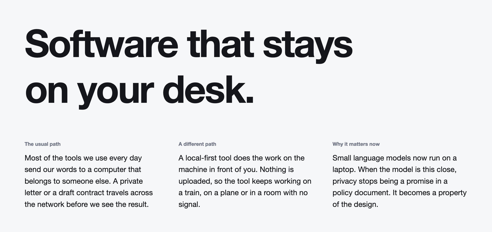
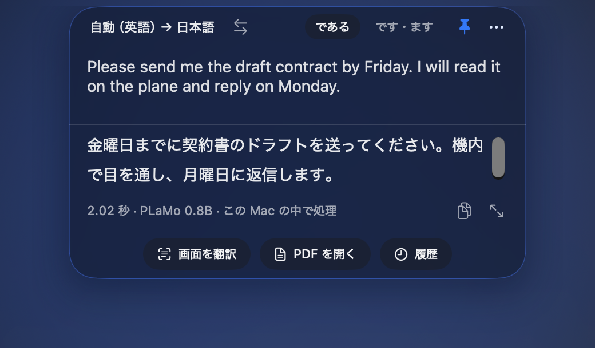

When the model is this close, privacy stops being a promise in a policy document. Privacy becomes a property of the design.

⌃⌥J
選んだ文をその場で訳す
どのアプリでも、文を選んでキーを押すだけです。訳は選択範囲のすぐ下に出ます。
メニューバーに常駐する Mac の翻訳アプリ
選んだ文も、PDF も、画面の文字も訳します。
原文も訳文も、Mac の外には送りません。

使い方
どの方法でも、Mac の中の同じエンジンが訳します。
When the model is this close, privacy stops being a promise in a policy document. Privacy becomes a property of the design.
⌃⌥J
どのアプリでも、文を選んでキーを押すだけです。訳は選択範囲のすぐ下に出ます。

⌃⌥K
メニューバーのパネルを開き、文を打ち込むか貼り付けて ⌘↩ を押します。文体は「である」と「です・ます」から選べます。訳文は ⌘⇧C でコピーできます。

⌃⌥O
画面の文字を読み取り、訳を元の位置に重ねます。読み取る範囲は、ウィンドウ、選んだ範囲、画面全体から選べます。


PDF をドロップ
メニューバーのアイコン、パネル、管理画面、ノッチのどこにドロップしても、翻訳が始まります。訳した PDF は、レイアウトを保ったまま、元の PDF の隣に保存されます。
同じ文の訳は、2 回目からキャッシュですぐに出ます。
用語集に登録した語は、指定した訳語で訳します。
53 言語に対応しています。主な組み合わせは日本語と英語です。
音が出ます。
プライバシー
翻訳は Mac の中で完結します。
ネットワークを使うのは、Hugging Face からモデルを取得するときだけです。
| 対象 | 通信 | 通信先 | タイミング |
|---|---|---|---|
| 原文と訳文 | 送りません | なし | なし |
| 翻訳モデル | 取得のみ | Hugging Face | モデルを取得するとき |
| PDF の翻訳 | 通信しません | なし | なし |
PDF もアプリの中で訳します。追加の部品は取得しません。
127.0.0.1 でだけ待ち受けます。起動のたびに変わるランダムな鍵がなければ、応答しません。モデル
翻訳には、Preferred Networks の PLaMo 3 Translate を使います。速さと品質の違う 3 種類があります。
| モデル | 取得サイズ | メモリ |
|---|---|---|
| PLaMo 3 Translate 0.8B 既定・速い | 0.57 GB | 約 1.1 GB |
| PLaMo 3 Translate 2B | 1.81 GB | 約 2.3 GB |
| PLaMo 3 Translate 8B 最も高品質 | 5.28 GB | 約 5.8 GB |
モデルは管理画面から取得できます。取得したファイルは、SHA-256 で検証してから使います。
8B は、メモリ 16 GB の Mac ではほかのアプリを閉じてから使います。
エンジンは最初の翻訳で起動し、10 分使わないと止まります。止まっている間、モデルはメモリに残りません。
モデルのライセンスは PLaMo Community License です。最初にモデルを取得する前に、アプリが要点を表示して同意を確認します。
インストール
個人開発のプレビュー版です。使いたい方は自由に使ってください。
llama.cpp 0.7.0 以降brew install llama.cpp翻訳エンジンの llama.cpp は、Homebrew で入れます。アプリには含まれません。
dmg を開いて Perspica を「アプリケーション」に入れます。Apple の公証を受けていないため、初回は「開けません」と表示されます。システム設定の「プライバシーとセキュリティ」で「このまま開く」を押してください。初回の起動時に、短い案内に沿ってモデルを取得します。
使えます。翻訳は Mac の中で行うため、モデルを取得したあとは、訳すのにネットワークを使いません。PDF の翻訳も同じです。
選んだ文を訳す ⌃⌥J にはアクセシビリティ、画面の文字を訳す ⌃⌥O には画面収録の権限を使います。PDF の翻訳が終わったことを知らせるときは、通知の権限を使います。どの権限も、使う直前に確認します。許可しなかった場合は、その機能の場所に理由と「システム設定を開く」が表示されます。
変えられます。⌃⌥J、⌃⌥K、⌃⌥O のどれも、設定の「ショートカット」で変更できます。
53 言語に対応しています。主な組み合わせは日本語と英語です。アプリの画面は日本語です。
履歴と訳のキャッシュとして、Mac の中に残ります。設定の「プライバシー」で、履歴を残さないようにできます。履歴、キャッシュ、ログをまとめて消すこともできます。訳した PDF は、元の PDF の隣に保存されます。
メニューバーのメニューから終了して、アプリを削除します。モデル、履歴、ログ、設定の消し方は README にあります。